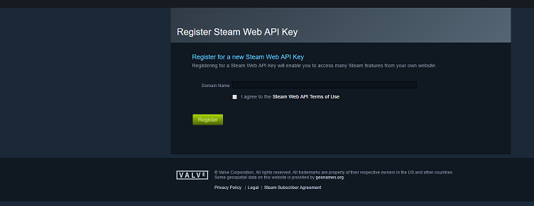
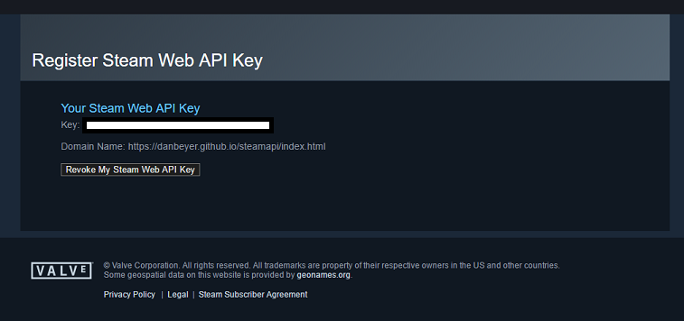

So first the relatively easy step: Signing up for a Steam API Key. This can be accomplished at Steam's API Key signup page. It requires a Steam account and a domain name to register it to, but I've found the actual domain you use does not seem to matter.
Here is what you should see after signing up for a Steam account and registering for a new API key.
Keep your new Steam key private and do not share with anyone. After clicking the Register button, you will be shown your new Steam API key. To obtain a new Steam API key, it is as easy as clicking the Revoke button and then registering a new key.
One last item to note is that many of the API calls require your SteamID to be in the SteamID64 format. This is a numeric representation of your SteamID (rather than the normal text name). You can find your SteamID64 by entering your SteamID name here:SteamID I/O